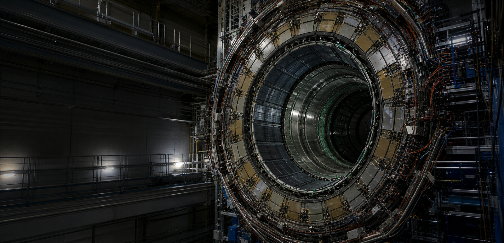
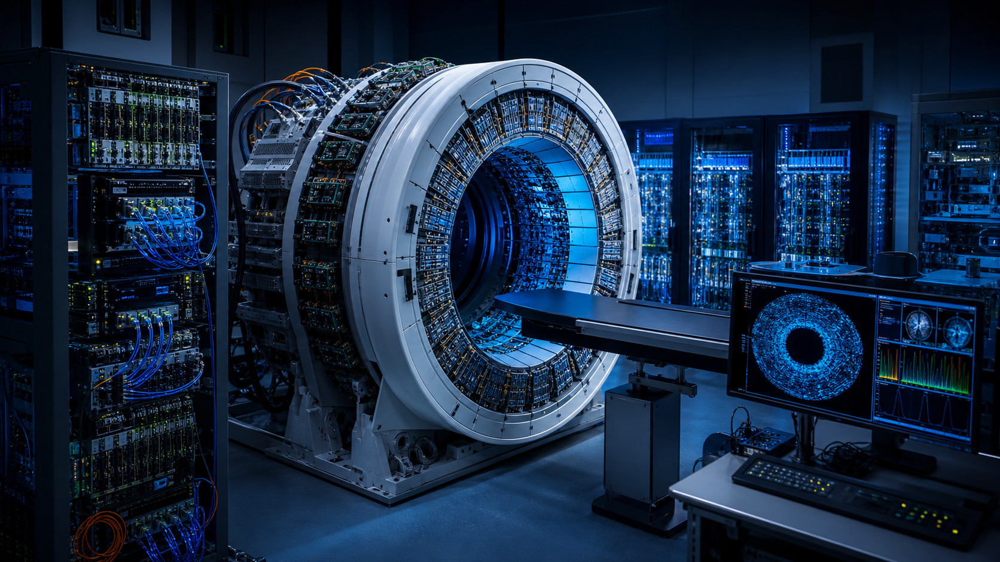
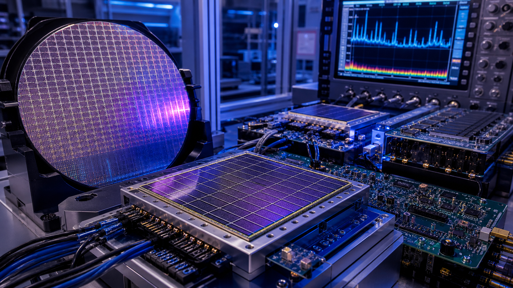
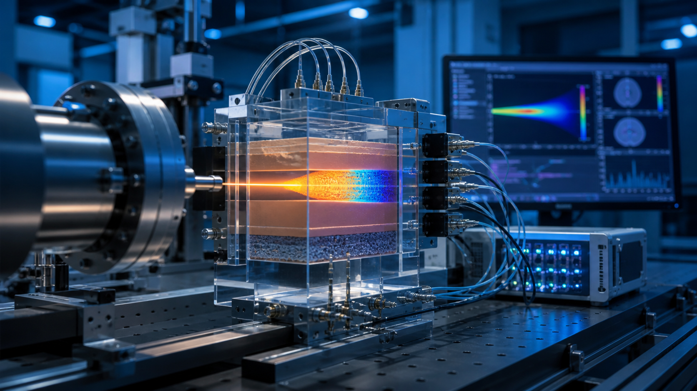
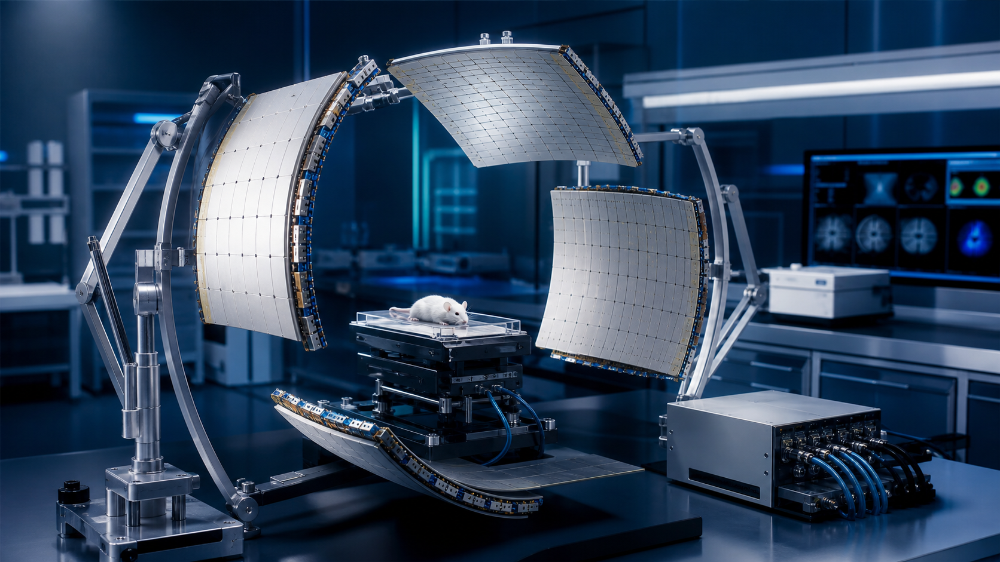

高能对撞机物理
高能对撞机将粒子加速至接近光速并使其碰撞，以重现早期宇宙的极端条件，是研究基本粒子相互作用和搜寻新物理的关键实验平台。对撞机设施的高亮度升级将以前所未有的统计精度检验标准模型，刻画希格斯玻色子的耦合性质，并在能量前沿搜寻超对称粒子及其他新物理信号。研究团队面向下一代对撞机实验研制核心探测方法与探测器系统，为高精度粒子鉴别和测量提供支撑，助力基础物理领域取得标志性发现。
高能对撞机物理研究团队目前正与其他机构合作伙伴一同寻求外部资金支持。如有意向，请发送邮件至 petlab@hust.edu.cn 与我们联系。
相关科研项目

国家杰出青年科学基金项目
全数字PET成像
全数字PET成像平台可完成海量并行通道与高速闪烁信号流的高精度数字化处理，为核医学临床诊疗与粒子物理实验提供高保真度的定量分子探测手段。

国家自然科学基金原创探索计划项目
高灵敏高计数率全数字化硅光电倍增器
高灵敏、高通量全数字化硅光电倍增集成电路可在强辐照环境下分辨重叠闪烁脉冲信号，适配高计数率 PET 成像与辐射探测场景。

国家自然科学基金国家重大科研仪器研制项目
质子束生物组织能量输运观测装置
自研质子束专用测量设备可定量解析质子束在生物组织内的能量沉积分布，实现剂量实时监测，支撑质子治疗方案精准优化。

国家自然科学基金重大国际（地区）合作研究项目
平板PET成像
平板 PET 探测硬件拓展了分子成像应用体系，可实现术中成像、临床前小动物成像及便携式床旁扫描，弥补传统环形 PET 系统的应用局限。
最新新闻

2016年04月28日
科技日报
■最新发现与创新 科技日报武汉4月27日电 （记者刘志伟 通讯员王潇潇）对病人做全身检测仅需5分钟，耗时仅需要传统设备一半左右...

2019年06月20日
科技日报
第01版）本报记者 刘志伟 通讯员 杨 亚近日，国家药品监督管理局在网上公布了《准产批件发布通知》，“正电子发射及X射线计算机断层成像扫描系统”（以下简称全数字PET）赫然在列...
实验室故事
我们的使命是打造一片适宜顶尖科学蓬勃发展的科研环境：保障科研人员发展、孕育创意与创新、完善硬件平台与基础设施，支撑 PET 实验室肩负服务国家的使命。
谢庆国
首席研究员，教授，博士生导师
数字化探测技术与仪器开发
质子治疗监测

进一步探索
重点论文
A novel iterative iso-transmission line empirical material decomposition algorithm for multi-energy photon-counting CT
Jan 01
Biomedical Signal Processing and Control,
99, 2025, 106853. doi:10.1016/j.bspc.2024.106853.
Performance Evaluation of New PET/CT DigitMI 930
Jan 09
IEEE Transactions on Radiation and Plasma
Medical Sciences, vol. 9, no. 5, pp. 578-585, May 2025, doi:
10.1109/TRPMS.2025.3526659.
Investigation of a Dual-Panel In-Beam PET Based on Digital Detectors for Proton Therapy Monitoring With Different Monitoring Strategies: A Simulation Study
Jan 30
IEEE Transactions on Radiation and Plasma
Medical Sciences, vol. 10, no. 4, pp. 582-592, April 2026, doi:
10.1109/TRPMS.2025.3584122.